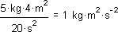
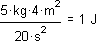
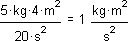

Simplifying Displayed Units |
To reduce a group of units to one unit if possible:
Double-click on the unit to bring up the Result Format dialog box.
Click on "Simplify units when possible" on the Unit Display tab.

becomes the following when simplified:

The default units for each quantity are determined by the unit system in effect for the worksheet. You can make modifications to the default units by changing the selections in the Worksheet Options dialog, Unit System tab. This tab allows you to create a Custom unit system that specifies the base and derived units used for simplification. For example, you can create a system based on SI default units, but return all times in milliseconds instead of seconds. Or, you could modify any system of units to simplify 1/s to Hertz, by choosing Hz as one of the derived units for the system.
| To display a unit result in fractional form |
Double-click on the unit to bring up the Result Format dialog box.
Choose "Format units" on the Unit Display tab.
becomes the following when formatted:

If you want fractional unit exponents displayed as rational fractions, such as 1/2, or 3/5, check the "Display unit exponents as fraction" box on the Unit Display tab. Otherwise, fractional units are displayed as decimals.